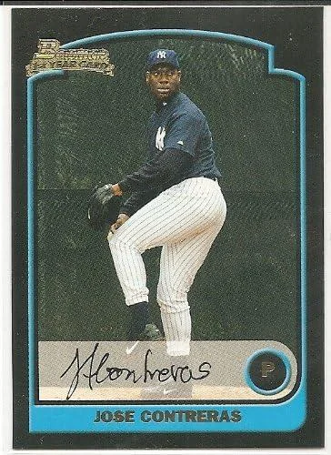
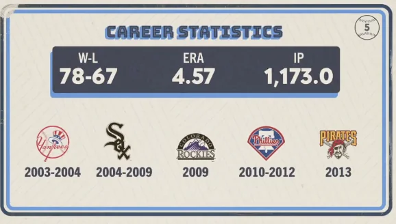

Jose Contreras
Career Highlights & Facts
(Facts are AI-generated and may require verification)
- Known as a 'titan' in his home country, he was a dominant international star before defecting to join the Yankees.
- He famously shared a tequila shot with his manager the night before his first start for a new team, which went on to win a championship that same year.
- He was once a highly touted international signing who arrived with massive expectations, only to be traded away for a pitcher who had previously won a league title.
Would you like to find out more about Jose Contreras?
Career Totals
| WAR | W | L | ERA | G | GS | SV | IP | SO | WHIP |
|---|---|---|---|---|---|---|---|---|---|
| 13.1 | 78 | 67 | 4.57 | 299 | 175 | 9 | 1173.0 | 889 | 1.367 |
Statistics via Baseball-Reference.com
The Original Clue
